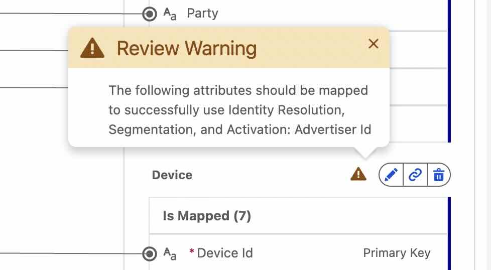

NTO Rewards Context
The Scenario: Northern Trail Outfitters has launched NTO Rewards - a loyalty program for outdoor enthusiasts. Members earn points on purchases, unlock tier benefits (Bronze → Silver → Gold), and can participate in Engagement Trails (gamified challenges).
Your Challenge: NTO's customer and loyalty data lives in Salesforce (Person Accounts, Orders, Loyalty Members with tiers and points). But marketing needs MORE than just CRM and loyalty data. You need to bring in behavioral data (website visits, email engagement, cart abandonment) and external data (in-store purchases, mobile app activity) to create a complete 360° view. That's where Data Cloud comes in - unifying Salesforce data with all these external touchpoints for true omnichannel personalization.
🎯 What You'll Learn
Data Streams
How customer and loyalty data flows into Data Cloud
Identity Resolution
Creating Unified Individuals from disparate records
Unified Individual
The foundation of all MC Next
Loyalty Data Model
Understanding Loyalty Program Member DMO and relationships
Understanding the Data Foundation
Required • 45 minutes
The Five Key Concepts
Before we dive into the hands-on labs, let's understand the foundation that powers MC Next:
Data Streams
Data Streams are the pipelines that bring data into Data Cloud. For NTO, we have multiple streams:
- Salesforce CRM: Person Accounts, Orders from Sales Cloud
- Salesforce Loyalty: Loyalty Program Members (tiers, points, promotions) - extends the Person Account
- Behavioral Data: Website visits, email engagement, cart abandonment from external systems
- External Transactions: In-store POS purchases, mobile app activity
DLO vs DMO (Data Lake Object vs Data Model Object)
DLO (Data Lake Object): Raw data as it first lands in Data Cloud - a 1:1 copy of the source.
DMO (Data Model Object): Cleaned, standardized, mapped data ready for use.
Identity Resolution (IDR)
Identity Resolution is the process that identifies which records across different systems represent the same person and links them together.
Example: Sarah Johnson might appear as:
- A Person Account in Sales Cloud (sarah.johnson@email.com) with her Loyalty Member extension (Silver tier, 2,450 points)
- A website visitor tracked by cookie (cookie ID: ABC123, browsing hiking gear)
- A mobile app user (device ID: XYZ789, tracking trail progress)
- An in-store shopper (POS transaction ID, purchasing from retail location)
IDR says "These are all the same person across channels!" and creates a Unified Individual.
Unified Individual
The Unified Individual is the single, consolidated view of a person across all your systems - both Salesforce and external. It's what you'll segment on and send to in MC Next.
Person Account: Sarah Johnson
Email: sarah.johnson@email.com
Loyalty: Silver, 2,450 points
Last Order: 2026-04-15
Web: Browsed hiking boots (today)
Email: Opened spring promo (yesterday)
Store: Purchased tent ($299, last week)
App: Completed "Peak Challenge" trail
Individual DMO & Loyalty Program Member DMO
Individual DMO: The person record from Salesforce (Person Account in B2C)
Loyalty Program Member DMO: The loyalty extension data (tier, points, enrollments) - connected to the Individual via standard Salesforce relationships
These DMOs are already related in Salesforce. When you build segments and Data Graphs, you'll navigate these relationships plus connections to behavioral and external data sources.
📺 Watch: Data Foundation Overview (5 min)
Before the lab, watch this video explanation of Data Streams, Identity Resolution, and the Unified Individual.
🎥 Unified Marketing: Performance & Analytics Strategy
⏱️ Watch from 4:53 to 9:45
Topics: Data Cloud (Data 360) implementation, unified data architecture, standardized Data Model Objects
View NTO's Data Streams & Identity Resolution
Hands-on • 30 minutes
🎯 Your Mission
Explore how NTO's Salesforce data and external behavioral data flows into Data Cloud, and see Identity Resolution in action creating Unified Individuals across all channels.
- View Data Streams for Salesforce and external behavioral data
- Create an Identity Resolution ruleset for cross-channel matching
- Query Unified Individual DMO to see NTO Rewards members unified across touchpoints
📋 Step-by-Step Instructions
Navigate to Data Cloud Setup
From the App Launcher, search for and select "Data Cloud".
You'll land on the Data Cloud home page. Click the gear icon in the top right to access Data Cloud Setup.

App Launcher with Data Cloud highlighted
Check Data Cloud Setup Status
On the Data Cloud Setup Home page, check if Data Cloud has been set up for your org.
If Data Cloud is not yet set up:
- Scroll down to the "Set Up Data Cloud" section
- Click "Get Started"
- Follow the setup wizard to complete the initial Data Cloud configuration
- Once setup is complete, assign the Data Cloud Admin permission set to your user:
- Go to Setup → Users → Permission Sets
- Search for and select "Data Cloud Admin"
- Click Manage Assignments → Add Assignments
- Select your user and click Assign
- Return to Data Cloud Setup Home
Set Up Salesforce CRM Data Stream (Fallback)
If you need the fallback, bring Salesforce data into Data Cloud by creating a Data Stream.
Navigate to Data Streams:
- From Data Cloud, click the Data Streams tab
- Click New to create a new Data Stream
- Select Salesforce CRM as the source
- Click Next
- Select the Sales Data Bundle (this includes Person Accounts, Orders, and related objects)
- Click Next to continue
- Review the configuration and click Deploy
- Wait for the deployment to complete

Data Streams tab - click New to create a stream
Review the Data Stream configuration:
Once created, you can click on the Salesforce CRM stream to see details:
- Which objects are being synced (Person Account, Order, Loyalty Program Member, etc.)
- Refresh frequency (how often data syncs)
- Field mappings to DMOs

Salesforce Data Stream showing Person Account and other objects from the Sales bundle
Deploy the Loyalty Management Advanced Data Kit
Now let's add the Loyalty Management data so we can access member tiers, points, and enrollments.
Step 4A (Fallback — only if the Loyalty Management Advanced data kit isn't already available): Install the Salesforce CDP CRM Loyalty Data Bundle
- In Data Cloud Setup, search for "Salesforce CRM" in the left sidebar
- Click on Salesforce CRM (under the Setup section)
- You'll see two sections:
- Standard Connections - Your active Salesforce org connection
- Standard Data Bundles - Pre-configured bundles available for install
- Scroll down to the Standard Data Bundles section
- Locate Salesforce CDP CRM Loyalty in the list

Salesforce CRM Setup showing Standard Data Bundles including Salesforce CDP CRM Loyalty (version 1.8)
Install the Salesforce CDP CRM Loyalty Bundle:
- Click the dropdown menu (⋮) next to Salesforce CDP CRM Loyalty
- Select Install
- Review the data bundle details showing the objects that will be added:
- Loyalty Program Member
- Loyalty Ledger
- Loyalty Program
- Loyalty Promotion
- Loyalty Tier
- And related loyalty objects
- Click Install to confirm
- Wait for the installation to complete - you'll see the Installed Version column populate with the version number
Step 4B (Primary): Deploy the Loyalty Management Advanced Data Kit
Navigate to Data Kits:
- Go to Data Cloud Setup → Data Kits (or from Setup, enter Data Kit in the Quick Find box and select Data Kits under Developer Tools)
- You'll see a list of all available Data Kits in your org
- Locate Loyalty Management Advanced in the list (if you took the fallback in Step 4A, it was installed with the Salesforce CDP CRM Loyalty bundle)
- Click on Loyalty Management Advanced to open the Data Kit detail page

Data Kits list under Developer Tools showing Loyalty Management Advanced
Review Data Kit Contents:
On the Loyalty Management Advanced Data Kit detail page, review:
- Data Kit API Name: sfm_LoyaltyAdvancedDataKit
- Data Stream Bundles (1): Shows "Loyalty Management: Advanced" bundle
- Type: Bundle
- Connector: Salesforce CRM
- Developer Name: sfm_LoyaltyManagementAdvanced
- Data Models (0): No custom data models (using standard DMOs)
- Related List Enrichments (0): No enrichments configured

Data Kit detail page showing Data Stream Bundle and Data Kit Deploy button
Get Your Org ID (if needed):
Before deploying, you may need your Salesforce Org ID. Here's how to find it:
- Open a new browser tab and go to Setup
- In the Quick Find box, search for Company Information
- Select Company Information under Company Settings
- Find Salesforce.com Organization ID (example: 00Dg70000075qOd)
- Copy this value - you'll need it in the deployment dialog
Deploy the Data Kit:
- Back on the Loyalty Management Advanced Data Kit page, click the Data Kit Deploy button in the top right
- In the Deploy dialog, you'll see:
- Data Space: Select "default" (or your custom data space if you created one)
- Org ID: Enter your Salesforce Org ID (the 15-character ID starting with "00D")
- The left side shows sfm_LoyaltyManagement... indicating the bundle being deployed
- Click the red Deploy button to start the deployment
- Click OK to confirm the deployment

Deploy dialog showing Data Space (default) and Org ID field
Monitor Deployment:
- After clicking Deploy, you'll see a deployment status message
- The deployment process typically takes 10-30 minutes depending on:
- Data volume (NTO has 500K loyalty members)
- Number of related objects
- System load
- You can check deployment status by clicking the Deployment History tab on the Data Kit page
Verify the Data Bundle is Active:
Return to Data Streams and verify:
- Your Salesforce CRM stream now shows additional loyalty objects
- The status shows "Active" or "Syncing"
- You can see Loyalty Program Member, Loyalty Ledger, and other loyalty objects in the object list
Create the Identity Resolution Ruleset
Identity Resolution is not pre-configured in this org — you'll create it now. This is how Data Cloud knows that Sarah Johnson in Salesforce is the same person browsing the website, using the mobile app, and shopping in stores: it links records that represent the same person into a single Unified Individual.
Create the Individual ruleset:
- Click the App Launcher and open the Data Cloud app. Navigate to the Identity Resolutions tab.
- Click New to start setting up your identity resolution.
- Select Create New Ruleset and click Next.
- Select Primary Data Model Object = Individual, then enter a 4-character Ruleset ID (for example, MCAI). Click Next.
- Enter a Ruleset Name and click Save.

Creating a new ruleset with Primary DMO = Individual and a 4-character Ruleset ID
Resolve the warnings on the ruleset record page:
On the Identity Ruleset record page, look at the warnings in the right column and resolve each one.
- Data mapping warning (e.g. "Map required field Lead_Home") — click the hyperlinked field text to open the data mapping screen. In the left column, map the source field to the appropriate target field on the right (for example, map Phone to Contact Point Phone → Formatted E164 Phone Number). Save the mapping update and return to the ruleset record page.
- Reconciliation rule warning — click the linked object/field (e.g. individual.Individual Id). Under Reconciliation Rules → Individual, select Individual Id, disable the default reconciliation rule (it's on by default), and update the field reconciliation rule to Source Priority. Click Save.

Each DMO's ⚠️ warning names the attribute to map (here, the Device DMO → Advertiser Id)
Configure the matching rules:
- Click Match Rules → Configure, then Next → Configure.
- Select Fuzzy Name and Normalized Email.
- Click Next → Next → Save.
Match Rule 2: Normalized Email
Reconciliation: Individual Id → Source Priority
Run the ruleset: it should start automatically once configured. Then go back to Setup → Marketing Cloud → Basic Settings — your Individual ruleset should now be auto-selected.

Matching rules: Fuzzy Name + Normalized Email; ruleset runs automatically once configured
Repeat for the Account (Account Individual) ruleset: follow the same flow for the Account ruleset. It's more streamlined and does not require resolving any warnings.
Query the Unified Individual DMO
Now let's see the result: Unified Individuals!
Open the Query Editor app (from the App Launcher) and create a new query for Training.
Run this query:
FROM "ssot__UnifiedIndividual__dlm"
LIMIT 10

Query workbench with UnifiedIndividual query
You should see a list of NTO customers. Each row is a Unified Individual - a person who may have records across multiple systems.

Query results showing 10 Unified Individuals
🎉 Lab 1 Checkpoint
Before moving to Lab 2, verify you can answer these questions:
- ✓ What are the main Data Streams NTO has configured (Salesforce + external)?
- ✓ How did you configure Identity Resolution to match records across different channels?
- ✓ What is a Unified Individual and why does it span multiple systems?
- ✓ Can you see NTO's customer data in the Query results?
Explore NTO's Loyalty Data
Hands-on • 30 minutes
🎯 Your Mission
See how Loyalty data extends the Person Account and how it all comes together with behavioral data. You'll explore the Loyalty Program Member DMO and see tier, points, and enrollment data in context.
- View Loyalty Program Member DMO structure and its relationship to Person Account
- Query loyalty data (members, tiers, points)
- Understand how Salesforce CRM + Loyalty data combines with behavioral data in the Unified Individual
📋 Step-by-Step Instructions
View Loyalty Program Member DMO
In Data Cloud, navigate to Data Model in the left sidebar.
Search for "Loyalty Program Member".
Click on it to see the DMO structure. Key fields to notice:
- Enrollment Date: When they joined NTO Rewards
- Member Status: Active, Inactive, etc.
- Member and program identifiers linking to the loyalty program and the Unified Individual

Loyalty Program Member DMO showing tier, points, and other fields
Query Loyalty Member Data
In the Query Editor app, create a new query for Training, then run:
FROM "ssot__LoyaltyProgramMember__dlm"
LIMIT 10
This returns loyalty members with their enrollment dates.
MemberTier and PointsBalance are not columns on LoyaltyProgramMember__dlm. To filter or return tier/points (e.g. "Gold tier members"), join to the related member-tier and points/currency DMOs. [Confirm the exact related DMO names, their fields, and the join keys in the org, then complete this query.]

Gold tier members with points balance and enrollment date
Try another query to see tier distribution. Because tier lives on a related DMO, this query joins to the member-tier DMO:
FROM "ssot__LoyaltyProgramMember__dlm" m
JOIN "ssot__LoyaltyMemberTier__dlm" t ⚠️
ON m.ssot__Id__c = t.ssot__LoyaltyProgramMemberId__c ⚠️
GROUP BY t.ssot__MemberTier__c
This shows you how many members are in each tier (Bronze, Silver, Gold).
ssot__LoyaltyMemberTier__dlm shown as a placeholder), its tier field, and the join key must be confirmed against the org — the exact names may differ.
See Customer + Loyalty Data Together
Now for the magic - let's see customer data AND loyalty data unified!
In the Query Editor app, create a new query for Training. This joins the Individual DMO with the Loyalty Program Member DMO — and, because tier and points live on their own DMOs, joins to those related DMOs as well:
i.ssot__FirstName__c,
i.ssot__LastName__c,
i.ssot__Email__c,
t.ssot__MemberTier__c, ⚠️
c.ssot__PointsBalance__c ⚠️
FROM "ssot__Individual__dlm" i
JOIN "ssot__LoyaltyProgramMember__dlm" lpm
ON i.ssot__Id__c = lpm.ssot__IndividualId__c
JOIN "ssot__LoyaltyMemberTier__dlm" t ⚠️
ON lpm.ssot__Id__c = t.ssot__LoyaltyProgramMemberId__c
JOIN "ssot__LoyaltyMemberCurrency__dlm" c ⚠️
ON lpm.ssot__Id__c = c.ssot__LoyaltyProgramMemberId__c
LIMIT 10
ssot__LoyaltyMemberTier__dlm), points/currency DMO (ssot__LoyaltyMemberCurrency__dlm), their fields, and all join keys shown here are placeholders — confirm the actual names against the org before running.

Customer names/emails with loyalty tiers and points - fully unified!
🎉 Lab 2 Checkpoint
Verify you understand:
- ✓ What data lives in the Loyalty Program Member DMO?
- ✓ How are Person Account and Loyalty Member related in Salesforce?
- ✓ Can you query to see customer + loyalty data together?
- ✓ Why does Data Cloud unify this Salesforce data with behavioral/external sources?
Deep Dive: Identity Resolution & Loyalty Data
Optional • 30 minutes
Identity Resolution Strategies
The simple "Email Exact Match" rule works for most cases, but enterprise implementations often need more sophisticated approaches:
Exact Match (Recommended Start)
Match on normalized email only. Simple, fast, low false-positive rate.
Use when: You have clean email data and it's the primary identifier.
Fuzzy Matching
Match on name + address even if email differs slightly.
Use when: Same person uses multiple emails (personal + work).
Risk: False positives (matching wrong people).
Custom IDs (LPID)
Some enterprises use their own master person IDs.
Use when: You have mature MDM system (e.g., Informatica).
Benefit: No fuzzy logic needed - you control matching.
Loyalty Data Model Deep-Dive
The full Loyalty Management data model includes several related DMOs:
- Loyalty Program Member: The member profile (tier, points, status)
- Loyalty Ledger: Points transaction history (earned, redeemed)
- Loyalty Promotion: Engagement Trails and campaigns
- Loyalty Promotion Enrollment: Which members are in which trails
- Loyalty Promotion Activity: Individual activity completions
- Loyalty Voucher: Rewards and coupons
When building Data Graphs and segments, you'll navigate these relationships to access the data you need.
Multi-Program Considerations
NTO currently has one loyalty program (NTO Rewards), but some enterprises run multiple programs:
- Example: NTO Retail Rewards + NTO Pro (B2B program)
- Challenge: Same person could be a member of both
- Solution: Filter by Program Name in all queries and segments
Historical Data Considerations
When migrating from a legacy loyalty platform:
- Import historical points transactions (for accurate LTV)
- Preserve tier history (when did they achieve Gold?)
- Migrate past promotion participation
- Consider data retention policies (do you need 5 years of history?)
For Implementation Teams
Optional • 15 minutes
Discovery Questions for Customers
When scoping a customer's data foundation, ask:
Why it matters: Identity Resolution can take 4-24 hours on first run for large datasets (10M+).
Why it matters: Migration from legacy loyalty platforms requires data mapping and historical import strategy.
Why it matters: Determines Identity Resolution rule strategy.
Why it matters: Requires program-scoped segmentation and data model considerations.
Timeline Considerations
| Activity | Typical Duration | Notes |
|---|---|---|
| Data Stream Configuration | 1-2 days | Includes field mapping and testing |
| Initial Identity Resolution Run | 4-24 hours | Depends on volume (1M vs 10M records) |
| Loyalty Data Integration | 2-3 days | Includes historical transaction import |
| Data Quality Validation | 1-2 days | Check match rates, missing data, etc. |
Common Pitfalls & How to Avoid
Pitfall: Poor email data quality
Symptom: Low Identity Resolution match rates
Solution: Clean email data in source system first. Use Data Cloud validation rules.
Pitfall: Missing loyalty member linkage
Symptom: Loyalty members don't match to CRM contacts
Solution: Ensure email field is populated on Loyalty Program Member records. Check case sensitivity.
Pitfall: Not accounting for IR latency
Symptom: New loyalty members don't appear in segments immediately
Solution: Set expectations that IR runs every 4-24 hours. For real-time needs, use Individual DMO (not Unified Individual) in Release 262+.
When to Escalate
- Data quality issues: If match rate is below 80%, engage Data Cloud architect
- Complex MDM scenarios: If customer has Informatica or other MDM, engage Professional Services for integration strategy
- Multi-cloud loyalty: If loyalty spans multiple Salesforce orgs, engage architecture team
Module 1 Quiz
5 minutes
Test your understanding before moving to Module 2:
1. What is the difference between a DLO and a DMO?
2. What does Identity Resolution do?
3. Where does NTO's loyalty tier and points data live?
4. True or False: If data isn't in Data Cloud, it won't be available in MC Next.
🎉 Module 1 Complete!
Congratulations! You've built the data foundation for NTO Rewards marketing.
✅ What You Learned
- How Data Streams bring Salesforce and external data into Data Cloud
- How Identity Resolution creates Unified Individuals across channels
- The difference between DLO and DMO
- How Loyalty data extends Person Accounts and combines with behavioral data
🛠️ What You Built
- Explored NTO's Data Streams (Salesforce + external behavioral data)
- Reviewed Identity Resolution ruleset for cross-channel matching
- Queried Unified Individual DMO
- Viewed unified Salesforce + behavioral data